A minimal example
example_minimal.RmdIntroduction and set up
In this vignette, we provide a minimal example to demonstrate how different sampling methods impact species distribution modelling using the STRIDER package. We will walk through the entire process, from creating a simulation object to visualizing the results.
Here we set up by loading the required packages
# everything you need for STRIDER
library(STRIDER)
library(terra)
#> terra 1.7.78
library(sf)
#> Linking to GEOS 3.10.2, GDAL 3.4.1, PROJ 8.2.1; sf_use_s2() is TRUE
#for general data wrangling and visualistion
library(dplyr)
#>
#> Attaching package: 'dplyr'
#> The following objects are masked from 'package:terra':
#>
#> intersect, union
#> The following objects are masked from 'package:stats':
#>
#> filter, lag
#> The following objects are masked from 'package:base':
#>
#> intersect, setdiff, setequal, union
library(ggplot2)
#for model vaidation
library(caret)
#> Loading required package: lattice
#set a seed so it's reproducible
set.seed(42)Simulating data
Background
The background serves as a spatial template, providing the coordinate reference system (CRS) (if needed), extent, and resolution for the subsequent simulation steps. Here, we create a simple background raster with dimensions 500x500.
dim_x <- 500
dim_y <- 500
background <- terra::rast(matrix(0,dim_x,dim_y))
sim_obj <- SimulationObject(background = background)Environmental state
To represent the state of the environment, we need to capture variables (real or abstract) that influence where the target species might exist. In this example, we define three environmental variables:
Here we define three variables:
- Rainfall (ecological niche)
- Temperature (ecological niche)
- Urban density (factor affecting effort)
# Define an environmental state with two variables, env1 and env2 which create gradients perpendicular
env1 <- terra::rast(matrix(rep(seq(from = 1, to = dim_x),times = dim_y),dim_x,dim_y))
env1 <- env1/max(values(env1))
env2 <- terra::rast(matrix(rep(seq(from = 1, to = dim_x),times = dim_y),dim_x,dim_y,byrow = T))
env2 <- env2/max(values(env2))
env3 <- terra::rast(matrix(rep(seq(from = 1, to = dim_x),times = dim_y),dim_x,dim_y,byrow = T))
env3 <- env3/max(values(env3))
env <- c(env1,env2,env3)
names(env) <- c("rainfall","temperature","urban_density")
plot(env)
#slot it into the simulation object
sim_obj <- sim_state_env(sim_obj,spatraster = env)Target state
We simulate the presence of the target species based on the environmental variables. The suitability_function is a custom function designed to transform environmental variables into a measure of habitat suitability for the target species. This function is crucial in ecological modeling, where we aim to understand how different environmental factors influence the presence or absence of a species.
In this example, the suitability is determined by averaging the rainfall and temperature values. This is a basic approach and assumes that both factors equally influence habitat suitability. In practice, you might have a more complex model where different environmental variables have different weights or non-linear effects on suitability.
The suitability function is used to generate a spatial layer that represents the habitat suitability for the target species based on the environmental conditions. This layer is then used in subsequent steps to:
- Simulate Target Presence: Determine where the target species is likely to be present.
- Realise the Target State: Generate a binary presence/absence or abundance map based on the suitability values.
# Define a function to turn the environment into suitability
suitabiity_function <- function(sim_obj){
out <- c(sim_obj@state_env$rainfall,sim_obj@state_env$temperature)
out <- mean(out)
names(out) <- "target"
out
}
#apply function
sim_obj <- sim_state_target_suitability(sim_obj,fun = suitabiity_function)
#realise
sim_obj <- sim_state_target_realise(sim_obj,fun=state_target_realise_binomial)The suitability_function provided in this vignette is a simple example. In real-world applications, you might use more sophisticated models that incorporate multiple environmental variables and their interactions. The STRIDER package allows you to define and apply such custom suitability functions, making it a flexible tool for ecological modeling and simulation.
Effort
We simulate the effort of sampling, which is biased by urban density. The sim_effort function is used to simulate sampling effort in the study area. This step is crucial for understanding how sampling effort is distributed and how it might bias the observed data.
Here are a description of the arguments provided:
-
sim_obj: The simulation object containing the environmental state and other relevant data. -
fun = "basic": Specifies that the “basic” effort simulation function is used. -
n_samplers = 500: Indicates that 500 samplers are used. -
n_visits = 1: Each sampler makes 1 visit. -
n_sample_units = 1: Each visit samples 1 unit. -
prob_raster = sim_obj@state_env$urban_density: The probability raster is derived from the urban_density layer in the environmental state. This biases the sampling effort towards areas with higher urban density.
# alternative method of defining effort: add custom points
# points_sf <- st_as_sf(data.frame(x = c(20,40,60),y = c(20,40,60)),coords = c("x", "y"))
# sim_obj <- sim_effort(sim_obj,
# sf = points_sf)
#simulate effort, biased by urban density
sim_obj <- sim_effort(sim_obj,
fun = effort_basic,
n_samplers=500,
n_visits = 1,
n_sample_units = 1,
prob_raster = sim_obj@state_env$urban_density)Detection
Simulate detection of the target species with a 100% detection probability.
#detection 100%
sim_obj <- sim_detect(sim_obj)Statistical analysis
Make a “biological recording” dataset with presence-only dataset
(po) and a presence-absence dataset (pa)
df <- export_df(sim_obj)
data_pa <- df #presence absense
data_po <- df[df$target_detected==1,] #presense onlyGenerate some background samples to aid model fitting
po_background <- effort_basic(sim_obj,100) |>
extract(x=sim_obj@state_env,xy=T) |>
st_as_sf(coords=c("x","y")) |>
mutate(target_detected=0)
data_po <- bind_rows(data_po,po_background)Combine dataset and fit models
fit_mod <- function(df){
glm(target_detected~rainfall + temperature, data = df, family = binomial(link = "logit"))
}
threshold = 0.5
# fit model to presence only data with background samples
mod_po <- fit_mod(data_po)
mod_po_predictions <- predict(sim_obj@state_env,mod_po,type = "response")
#Compare it to presence/absence data
mod_pa <- fit_mod(data_pa)
mod_pa_predictions <- predict(sim_obj@state_env,mod_pa,type = "response")A simulation workflow
In this section, we will run multiple simulations to investigate the impact of different sampling methods on model performance. We will use predefined objects and a new function to adjust sampling weight rasters. By chaining together various steps of the simulation pipeline, we can systematically alter the factors of interest, such as sampling bias strength and the number of samplers, to study their effects on the results.
Predefined Objects
We start with the predefined objects: background, env, and suitability_function. These objects were defined in the earlier sections of this vignette.
#use pre-defined objects
background
#> class : SpatRaster
#> dimensions : 500, 500, 1 (nrow, ncol, nlyr)
#> resolution : 1, 1 (x, y)
#> extent : 0, 500, 0, 500 (xmin, xmax, ymin, ymax)
#> coord. ref. :
#> source(s) : memory
#> name : lyr.1
#> min value : 0
#> max value : 0
env
#> class : SpatRaster
#> dimensions : 500, 500, 3 (nrow, ncol, nlyr)
#> resolution : 1, 1 (x, y)
#> extent : 0, 500, 0, 500 (xmin, xmax, ymin, ymax)
#> coord. ref. :
#> source(s) : memory
#> names : rainfall, temperature, urban_density
#> min values : 0.002, 0.002, 0.002
#> max values : 1.000, 1.000, 1.000
suitabiity_function
#> function(sim_obj){
#> out <- c(sim_obj@state_env$rainfall,sim_obj@state_env$temperature)
#> out <- mean(out)
#> names(out) <- "target"
#> out
#> }Adjusting Sampling Weight Raster
We define a function, adjust_towards_average, which adjusts the sampling weight raster based on a given proportion. This function takes the urban_density layer from the environmental state and modifies its values to create varying levels of sampling bias:
Running Simulations
Next, we define the main simulation function, run_simulation, which incorporates the entire simulation pipeline. This function accepts three arguments: rep (the repetition number), sampling_bias_strength (the strength of the sampling bias), and n_samplers (the number of samplers). The function performs the following steps:
- Adjust Sampling Weight: Modify the urban_density raster based on the specified sampling_bias_strength.
- Simulate Sampling: Create a new SimulationObject and apply the simulation steps: defining the environmental state, simulating target suitability and realization, simulating sampling effort with the adjusted sampling weight, detecting, and reporting.
- Fit Model: Fit a generalized linear model (GLM) to the sampled data.
- Generate Test Set: Create an independent test set by simulating additional sampling effort.
- Predict on Test Set: Make predictions on the test set using the fitted model.
- Compute Metrics: Calculate performance metrics, including accuracy, precision, recall, and F1 score, based on the confusion matrix.
- Return Results: Output the results as a data frame.
# Here we define a function which has the full simulation pipeline chained together but with the arguments you wish to change as function arguments
# Here my factors I'm interested in are the sampling bias strength and the number of samplers
run_simulation <- function(rep,sampling_bias_strength, n_samplers){
sampling_weight <- adjust_towards_average(env$urban_density,sampling_bias_strength)
#simulate sampling
sim_obj <- SimulationObject(background = background) |>
sim_state_env(spatraster = env) |>
sim_state_target_suitability(fun = suitabiity_function) |>
sim_state_target_realise(fun=state_target_realise_binomial) |>
sim_effort(fun = effort_basic,
n_samplers=n_samplers,
n_visits = 1,
n_sample_units = 1,
prob_raster = sampling_weight,
sampling_bias_strength = sampling_bias_strength) |>
sim_detect()
#fit model to sampled data
mod1 <-
sim_obj |>
export_df() |>
fit_mod()
#generate an independent test set
test_set <- sim_obj |> sim_effort(fun = effort_basic,n_samplers = 10000) |> export_df()
# make prediction on the test set
test_prediction <- predict(mod1, test_set,type="response")
test_set <- cbind(test_set,test_prediction)
test_set$predicton_realised <- as.numeric(test_set$test_prediction>0.5)
#confusion matrix
conf_matrix <- caret::confusionMatrix(
factor(test_set$predicton_realised),
factor(test_set$target_realised)
)
# Extract confusion matrix metrics
accuracy <- conf_matrix$overall['Accuracy']
precision <- conf_matrix$byClass['Pos Pred Value']
recall <- conf_matrix$byClass['Sensitivity']
f1_score <- 2 * ((precision * recall) / (precision + recall))
#results
data.frame(
#inputs
sampling_bias_strength = sampling_bias_strength,
n_samplers = n_samplers,
rep = rep,
#output
accuracy = accuracy,
precision = precision,
recall = recall,
f1_score = f1_score)
}
#test the function and time it to extrapolate how long the run time will be
single_run_time <- system.time(run_simulation(1,1,500))["elapsed"]
# define parameters data frame
simulation_parameters <-
expand.grid(
rep = 1:3,
sampling_bias_strength = c(0,0.5,1),
n_samplers=seq(from = 50,to= 350, by = 100),
stringsAsFactors = F
)
#estimated run time
print(paste0("Estimated run time: ",round(single_run_time*nrow(simulation_parameters))," seconds" ))
#> [1] "Estimated run time: 22 seconds"
#do the simulation for the required parameters and combine the rows into a data frame
sim_outputs <- apply(simulation_parameters, 1, function(row) {
run_simulation(
as.numeric(row["rep"]),
as.numeric(row["sampling_bias_strength"]),
as.numeric(row["n_samplers"]))
}) %>% bind_rows()By running multiple simulations with varying sampling biases and numbers of samplers, we can gain insights into how these factors impact the performance of our model. The results can help in understanding the effects of sampling design on model accuracy, precision, recall, and F1 score, providing valuable information for improving sampling strategies and model reliability.
Plot results
The code below creates a visualization to show how the F1 score of a model is influenced by the number of samples and the strength of sampling bias:
#visualise how f1 score is impacted by the number of samples and the strength of the sampling bias
sim_outputs %>% ggplot(aes(x = n_samplers+sampling_bias_strength*20-10 ,
y = f1_score,
colour = as.factor(sampling_bias_strength),
group = sampling_bias_strength))+
geom_point()+
geom_smooth(se=F,method = "lm")+
theme_minimal()+
scale_x_continuous(breaks=seq(from = 50,to= 400, by = 50))+
labs(colour = "Strength of sampling bias")+
xlab("Number of samples")+
ylab("F1 score")
#> `geom_smooth()` using formula = 'y ~ x'
Impact of Sample Size: The F1 score becomes more stable as the number of samples increases. When the sample size is small, the F1 score shows more variability.
Impact of Sampling Bias: Higher sampling bias tends to decrease the F1 score, as indicated by the downward trend in the lines corresponding to higher bias levels.
This visualization helps understand how the design of the sampling process, specifically the number of samples and the extent of sampling bias, can affect the performance of the model. Such insights are crucial for optimizing sampling strategies to achieve more reliable and accurate models.